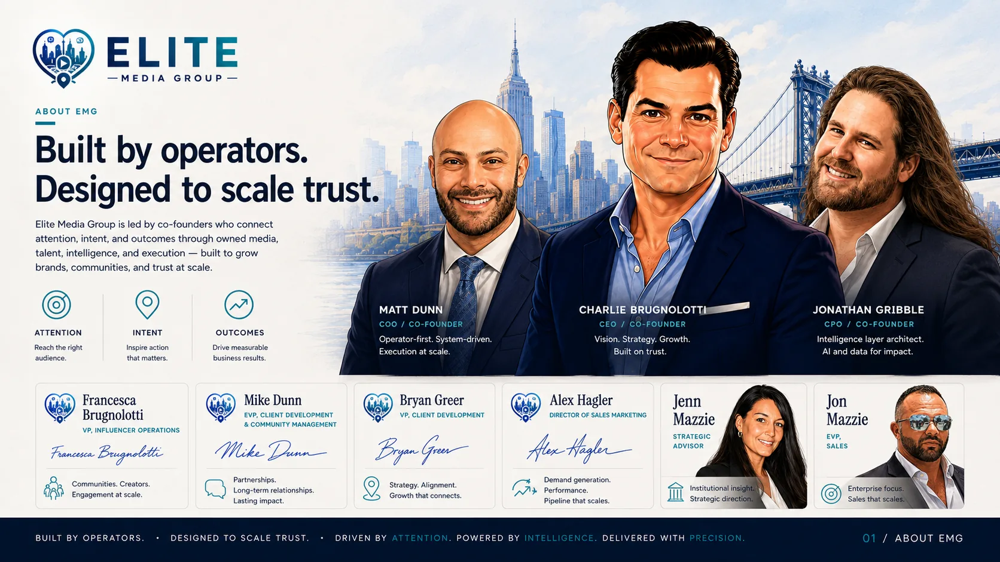
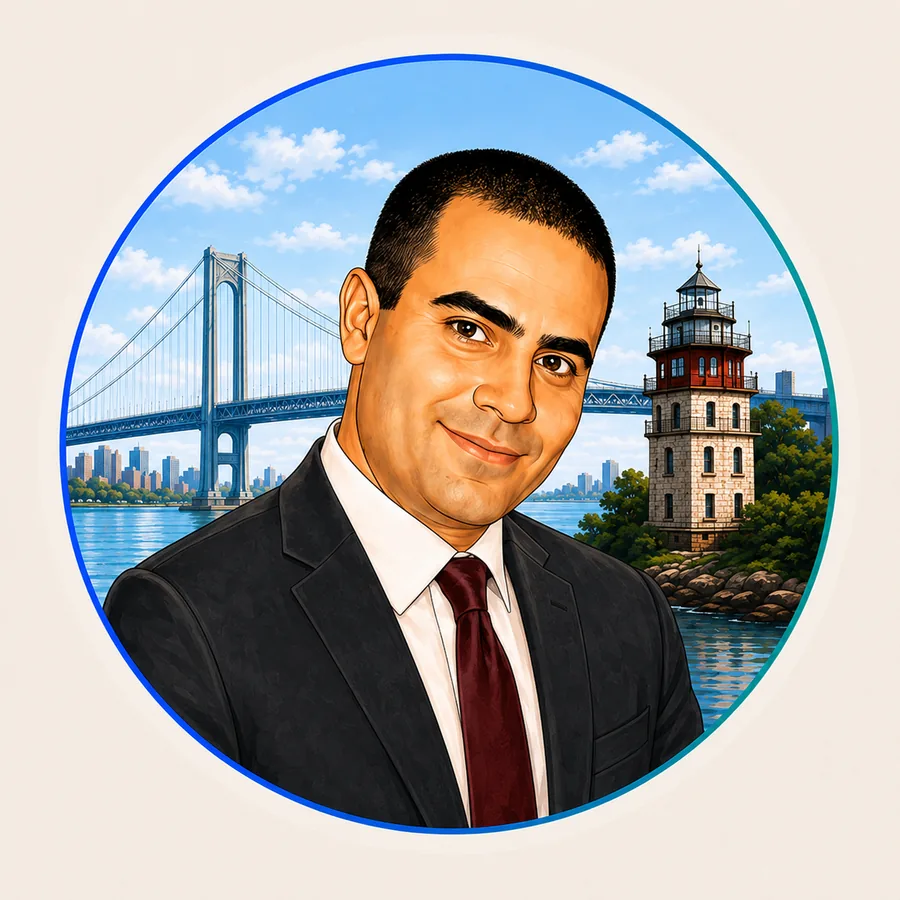
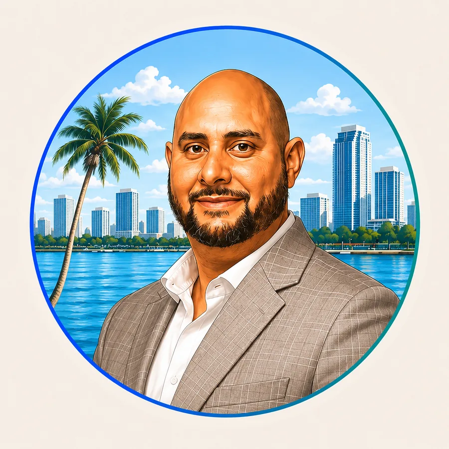
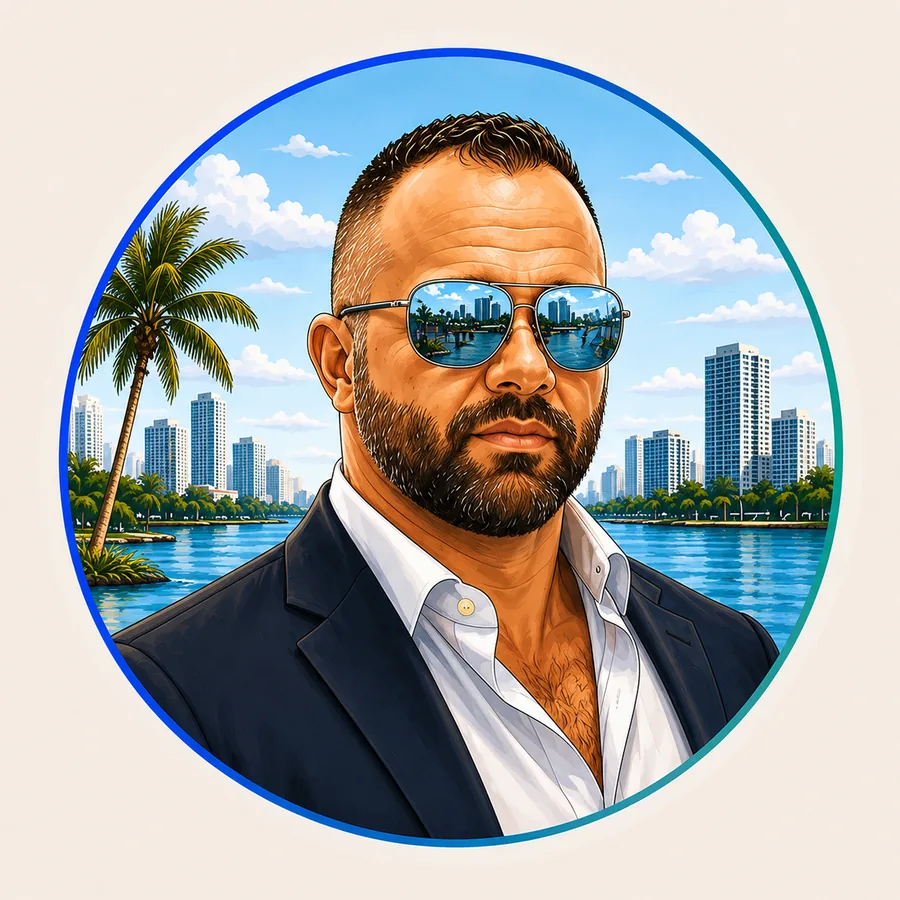

Francesca Brugnolotti
VP, Influencer Operations & Community Engagement

EMG brings together operators, builders, relationship leaders, strategists, and community thinkers. Different disciplines, one responsibility: create something useful enough to earn trust and disciplined enough to produce real outcomes.
VP, Influencer Operations & Community Engagement

EVP, Client Development & Community Management

VP, Client Development
Director of Sales Marketing
Strategic Advisor

EVP, Sales
Elite Media Group was built around a simple observation: people rarely wake up looking for advertising. They look for an answer, a recommendation, a person they trust, or a place that helps them decide what to do next.
That is where we believe modern growth begins—not with interruption, but with usefulness. Not with a campaign pretending to understand someone, but with an ecosystem designed to recognize real intent and respond with something valuable.
We build owned media properties, AI guides, creator partnerships, performance systems, and intelligence infrastructure around the moments that actually move people. Each part has value on its own. Connected, they become something more powerful: a system that learns what people need, helps them move forward, and creates measurable value for the partners serving them.
We also believe growth carries a responsibility. The closer a company gets to understanding what people need, the more carefully it has to use that understanding. Intelligence should make the experience more relevant and more humane—not more manipulative.
That is why the system matters. A single campaign can create a result. A connected system can create memory, accountability, and improvement. It can show us not only what performed, but what helped—and where the experience failed the person on the other side of the screen.
Our point of viewTrust is not a marketing tactic. It is the result of being useful, being honest, and showing up consistently enough that people believe you will still be there when the decision matters.
We do not believe knowledge is something a company gets to hoard. Good ideas are received, tested, lived, improved, and passed forward. Our responsibility is to turn what we learn into clearer guidance, better systems, and better outcomes.
That philosophy shapes how we build products, how we work with creators, how we represent partners, and how we measure success.
Owned media gives us a place to serve people directly. AI guides make complex decisions easier to navigate. Creators bring lived experience, credibility, and community. Performance marketing creates immediate pathways to action. EMG Loop connects the signals so the entire system can learn.
That is the real idea behind Elite Media Group: not five disconnected departments, but one growth ecosystem organized around the way people actually discover, decide, and move.
People will continue to seek answers. They will continue to trust people and places that help them. Businesses will continue to need clearer evidence of what created value. Technology will change, but those truths will not.
EMG is being built around them.
Tell us what you are trying to build, where progress is getting stuck, and what a meaningful outcome would change.